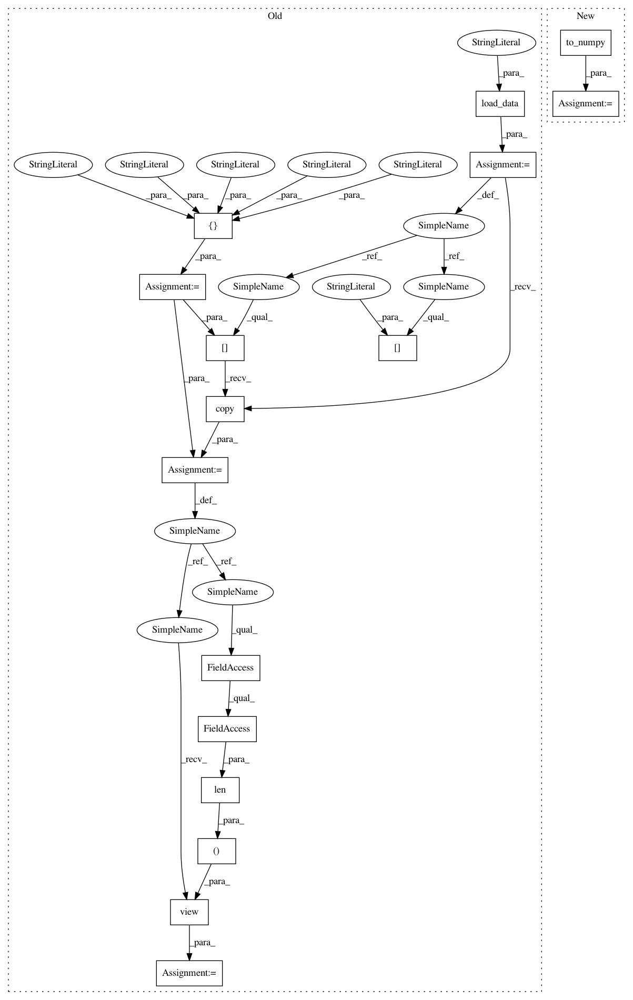

870022ab7abce46f9bff47c8a9c787808a630e59,tests/test_features/test_importances.py,TestFeatureImportancesVisualizer,test_integration_feature_importances,#TestFeatureImportancesVisualizer#,63
Before Change
Integration test of visualizer with feature importances param
occupancy = self.load_data("occupancy")
features = [
"temperature", "relative_humidity", "light", "C02", "humidity"
]
// Extract X and y as numpy arrays
X = occupancy[features].copy()
X = X.view((float, len(X.dtype.names)))
y = occupancy["occupancy"].astype(int)
fig = plt.figure()
ax = fig.add_subplot()
After Change
// Load the test dataset
X, y = load_occupancy(return_dataset=True).to_numpy()
fig = plt.figure()
ax = fig.add_subplot()
In pattern: SUPERPATTERN
Frequency: 3
Non-data size: 16
Instances
Project Name: DistrictDataLabs/yellowbrick
Commit Name: 870022ab7abce46f9bff47c8a9c787808a630e59
Time: 2019-01-30
Author: benjamin@bengfort.com
File Name: tests/test_features/test_importances.py
Class Name: TestFeatureImportancesVisualizer
Method Name: test_integration_feature_importances
Project Name: DistrictDataLabs/yellowbrick
Commit Name: 870022ab7abce46f9bff47c8a9c787808a630e59
Time: 2019-01-30
Author: benjamin@bengfort.com
File Name: tests/test_features/test_importances.py
Class Name: TestFeatureImportancesVisualizer
Method Name: test_integration_coef
Project Name: DistrictDataLabs/yellowbrick
Commit Name: 870022ab7abce46f9bff47c8a9c787808a630e59
Time: 2019-01-30
Author: benjamin@bengfort.com
File Name: tests/test_features/test_importances.py
Class Name: TestFeatureImportancesVisualizer
Method Name: test_integration_quick_method